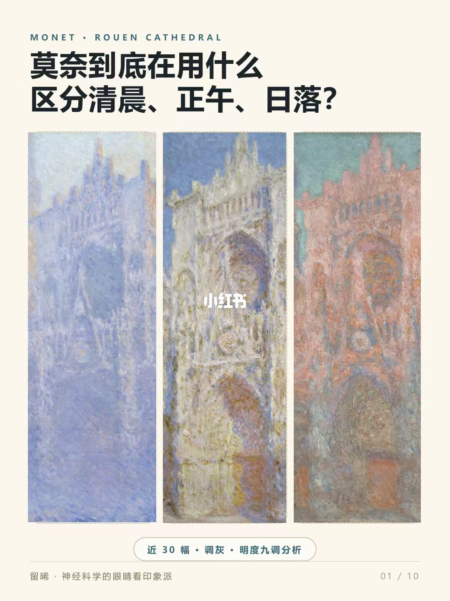
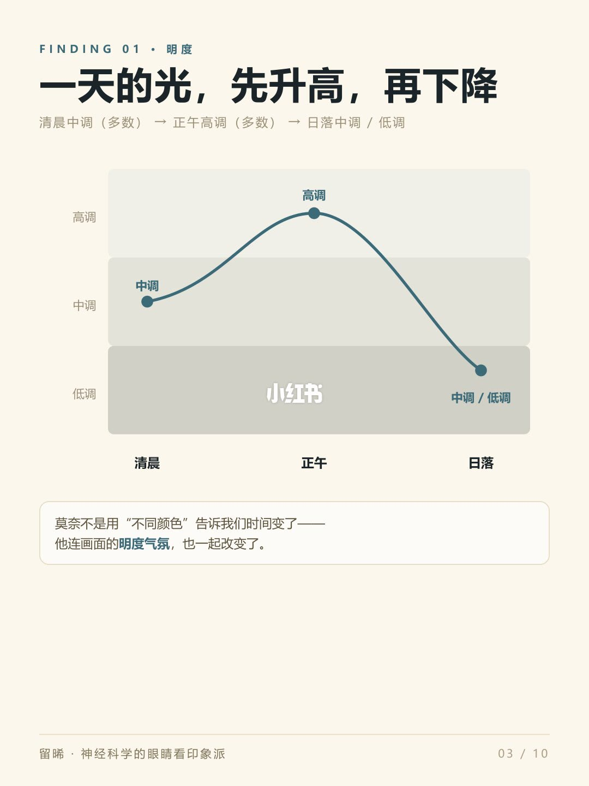
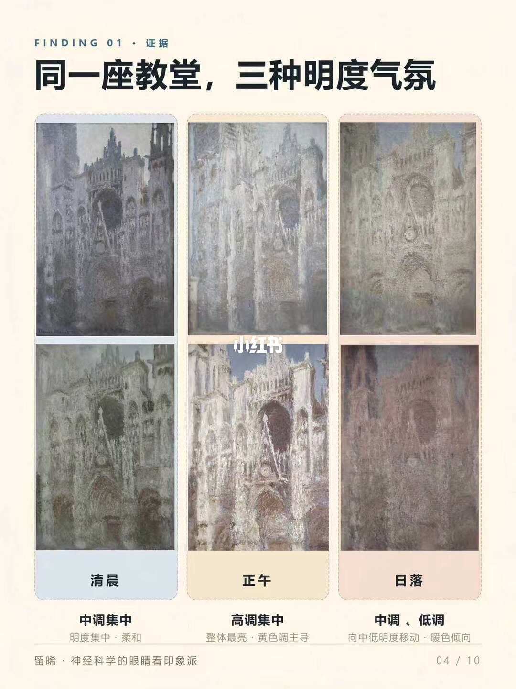
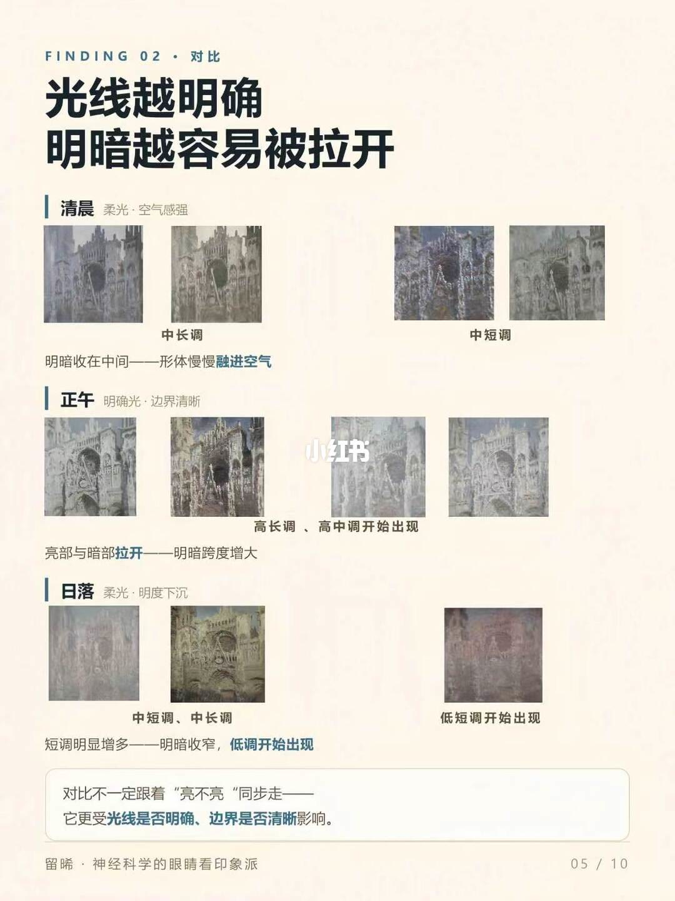
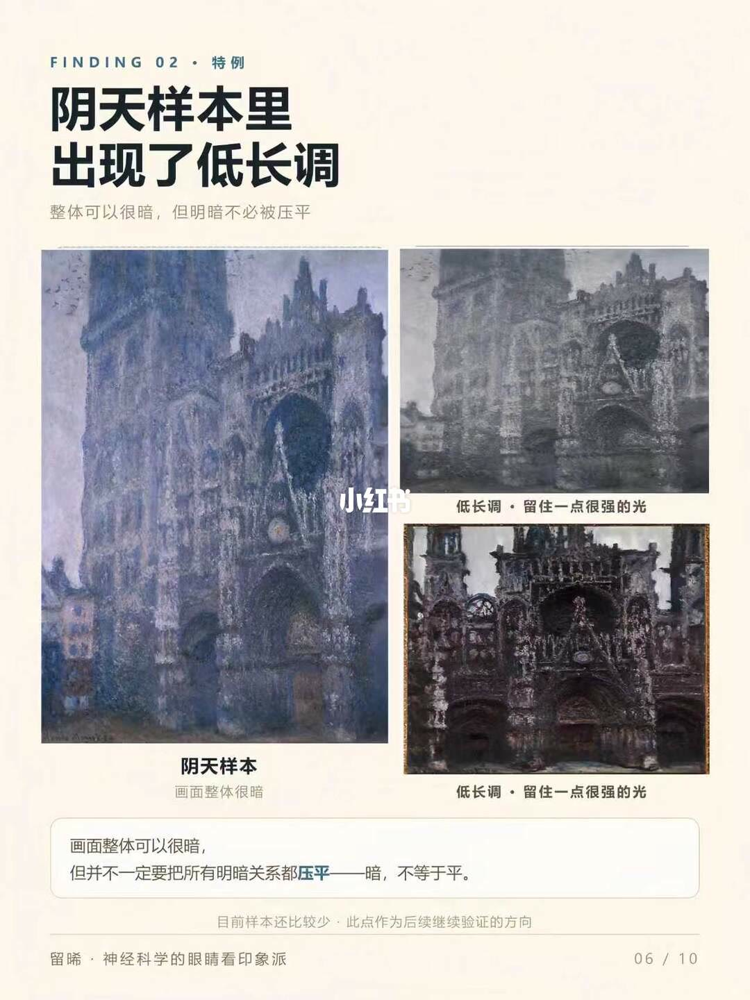
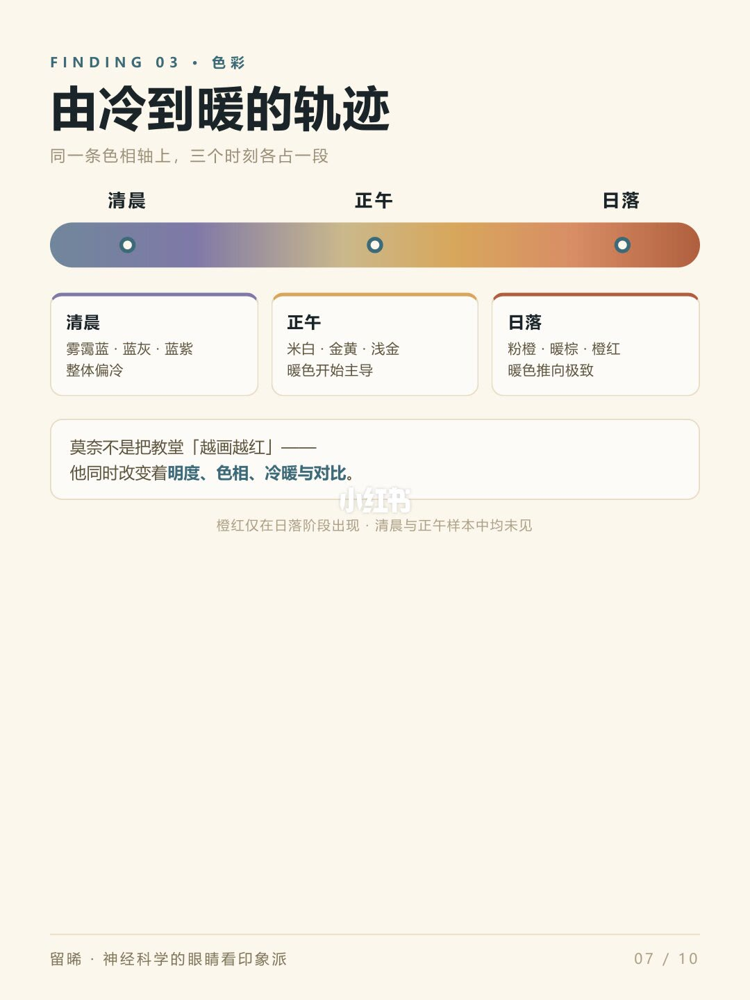
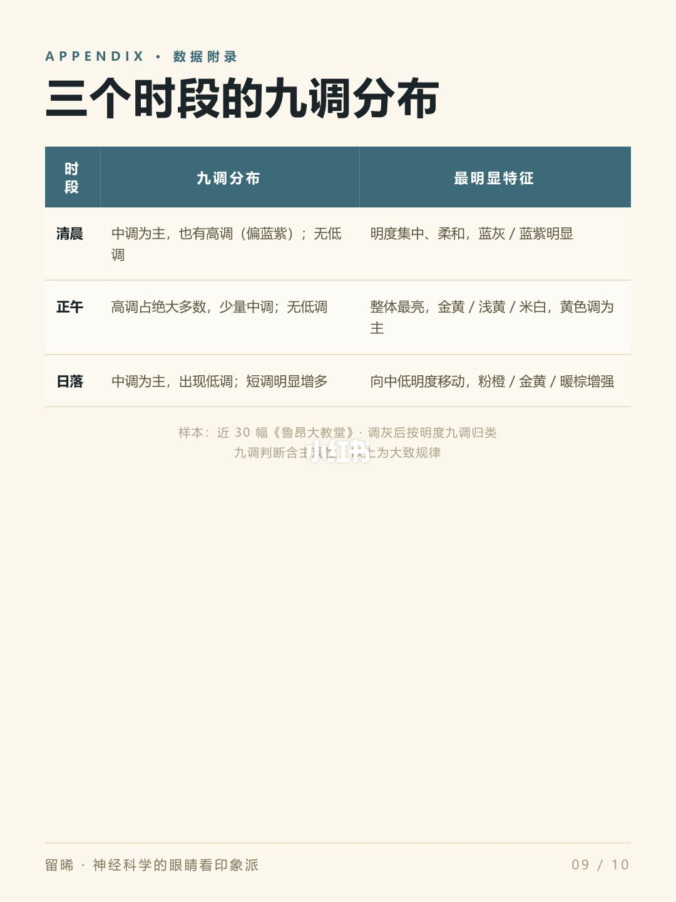
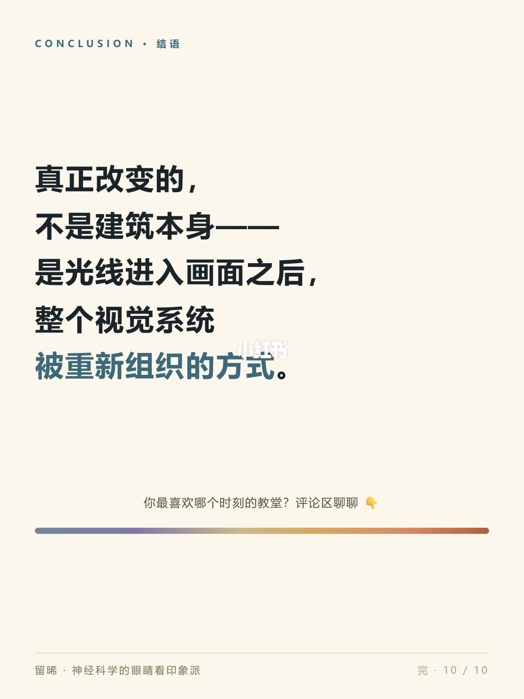

图文实录 · 小红书 · 留晞*
莫奈到底在用什么，区分清晨、正午、日落？
他改的不是教堂。同一座鲁昂大教堂，清晨多数落在中调，正午多数拉到高调，日落回到中调并出现低调；光线越明确，明暗越容易拉开，所以正午出现高长调、高中调，清晨和日落更多把形体收进中长调、中短调；色彩则沿同一条色相轴从雾霭蓝、蓝灰、蓝紫走到米白、金黄、浅金，再走到粉橙、暖棕、橙红，橙红只在日落出现。明度管气氛升再降，对比管形体是清楚还是融进空气，色彩标记时刻。这是近 30 幅调灰后的大致规律，不是色号。
1/9
同一座教堂，先把问题摆出来
页眉是 MONET · ROUEN CATHEDRAL。大标题就是这篇的问题：莫奈到底在用什么，区分清晨、正午、日落？三幅鲁昂大教堂并排。左幅偏冷，蓝和紫裹着立面；中幅最亮，石面发白、发黄；右幅转暖，粉和橙压上来。三幅下面没有「清晨 / 正午 / 日落」的标签，左右哪一幅对应哪个时刻，这页自己没有写死。底部胶囊写着「近 30 幅 · 调灰 · 明度九调分析」。图上没有色号。

2/9
先建坐标，再看他在坐标里怎么移动
页眉 METHOD · 样本与方法，标题「我的分析方法」，副题「系统性归类」。三步都在白框里。第一步收集样本：纳入莫奈《鲁昂大教堂》系列近 30 幅。第二步画面调灰：去掉色相干扰，只保留明度关系。第三步九调归类：每幅按高 / 中 / 低 × 长 / 中 / 短归入九宫。框下写：方法延续上一篇「明度九调」——先建立坐标，再看莫奈在坐标里怎么移动。
页底有警示标记，两行：「九调的判断含有主观性」；「本文结论，是样本中观察到的大致规律」。
3/9
一天的光，先升高，再下降
页眉 FINDING 01 · 明度。副题把三个时刻连成一句：「清晨中调（多数）」「正午高调（多数）」「日落中调/低调」。图是一条折线，背景分成三带，左侧标高调、中调、低调。清晨那个点标「中调」，落在中带；正午标「高调」，升到高带；日落标「中调/低调」，降到靠近低调的位置。折线先升后降，正午最高。
底下白框：莫奈不是用「不同颜色」告诉我们时间变了——他连画面的明度气氛，也一起改变了。「明度气氛」被单独标出。

4/9
同一座教堂，三种明度气氛
页眉 FINDING 01 · 证据。三列都是鲁昂大教堂，每列两幅。清晨列标「中调集中」，下面写「明度集中 · 柔和」，画面偏蓝灰。正午列标「高调集中」，下面写「整体最亮 · 黄色调主导」，石面最亮。日落列标「中调、低调」，下面写「向中低明度移动 · 暖色倾向」。这一页把第 3 页的三个点放回彩色教堂上，黄色调只是文字描述，没有色号。

5/9
光线越明确，明暗越容易被拉开
页眉 FINDING 02 · 对比。标题拆成两行。清晨一行是「柔光 · 空气感强」，旁边两枚标签「中长调」「中短调」，结论「明暗收在中间——形体慢慢融进空气」。正午一行是「明确光 · 边界清晰」，标签「高长调、高中调开始出现」，结论「亮部与暗部拉开——明暗跨度增大」。日落一行是「柔光 · 明度下沉」，标签「中短调、中长调」和「低短调开始出现」，结论「短调明显增多——明暗收窄，低调开始出现」。
页底单独一句：对比不一定跟着「亮不亮」同步走——它更受光线是否明确、边界是否清晰影响。后半句被标出。

6/9
阴天可以很暗，明暗不必被压平
页眉 FINDING 02 · 特例。标题「阴天样本里出现了低长调」，副题「整体可以很暗，但明暗不必被压平」。左侧一幅标「阴天样本」「画面整体很暗」。右侧两处都标「低长调 · 留住一点很强的光」。白框写：画面整体可以很暗，但并不一定要把所有明暗关系都压平——暗，不等于平。「压平」被标出。页底小字：目前样本还比较少，此点作为后续继续验证的方向。

7/9
由冷到暖，是同一条轴上的三段
页眉 FINDING 03 · 色彩。标题「由冷到暖的轨迹」，副题「同一条色相轴上，三个时刻各占一段」。轴上三个点按清晨、正午、日落排列。清晨：雾霭蓝 · 蓝灰 · 蓝紫，整体偏冷。正午：米白 · 金黄 · 浅金，暖色开始主导。日落：粉橙 · 暖棕 · 橙红，暖色推向极致。白框：莫奈不是把教堂「越画越红」——他同时改变着明度、色相、冷暖与对比。这四个词被标出。小字：橙红仅在日落阶段出现，清晨与正午样本中均未见。图上没有色号。

8/9
三个时段的九调分布
页眉 APPENDIX · 数据附录。表头三列：时段、九调分布、最明显特征。清晨：中调为主，也有高调（偏蓝紫）；无低调。特征是明度集中、柔和，蓝灰 / 蓝紫明显。正午：高调占绝大多数，少量中调；无低调。特征是整体最亮，金黄 / 浅黄 / 米白，黄色调为主。日落：中调为主，出现低调；短调明显增多。特征是向中低明度移动，粉橙 / 金黄 / 暖棕增强。
表下写：样本：近 30 幅《鲁昂大教堂》· 调灰后按明度九调归类。再下一行能读出「九调判断含主观性」和「大致规律」，中间几个字无法逐字确认。这张图印的页码是 09/10，不是 08/10。

9/9
被重新组织的是视觉系统
页眉 CONCLUSION · 结语。正文五行：真正改变的，不是建筑本身——是光线进入画面之后，整个视觉系统被重新组织的方式。下面一行：你最喜欢哪个时刻的教堂？评论区聊聊。页中有一条从冷色过渡到暖色的横线，精确色值无法确认，图上没有色号。页脚印着「完 · 10/10」。

收尾
结论：清晨、正午、日落被三件事同时分开。明度先升后降，清晨多数中调、正午多数高调、日落中调并出现低调。对比跟着光线明不明确，不跟着亮不亮：正午拉开，清晨和日落把形体收进中间，日落短调变多。色彩从冷蓝紫走到金黄，再走到粉橙暖棕，橙红只在日落出现。阴天可以很暗，只要留一处强光，就仍是低长调，暗不等于平。
支撑页：问题在 1/9。调灰和九宫在 2/9。明度折线在 3/9，三列教堂在 4/9。对比的拉开和收窄在 5/9，阴天低长调在 6/9。色相三段在 7/9。分布表在 8/9。建筑不变、视觉系统被重写，写在 9/9。
边界：近 30 幅，图上没有逐幅名单，也没有直方图和百分比。九调判断含主观性，作者写成大致规律。阴天那条样本还比较少，页上写明留待后续验证。没有色号。下载的九张里，页脚从 07/10 跳到 09/10，中间那一页不在这批图里，内容无法确认。第 8 页表下小字的中间几个字无法逐字确认。